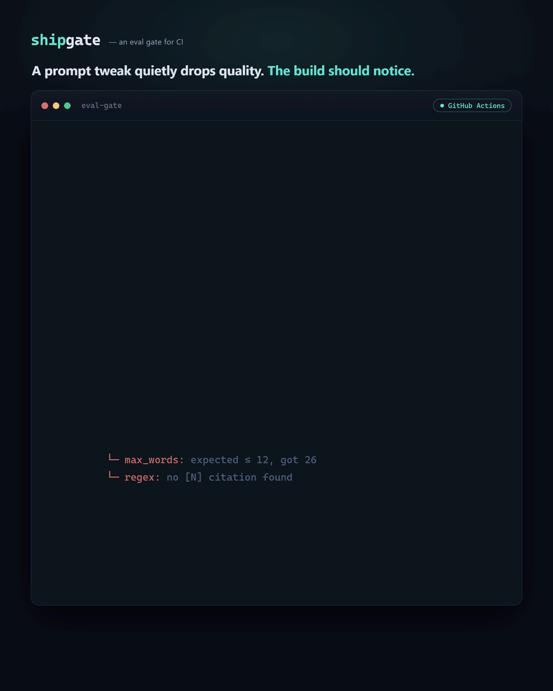
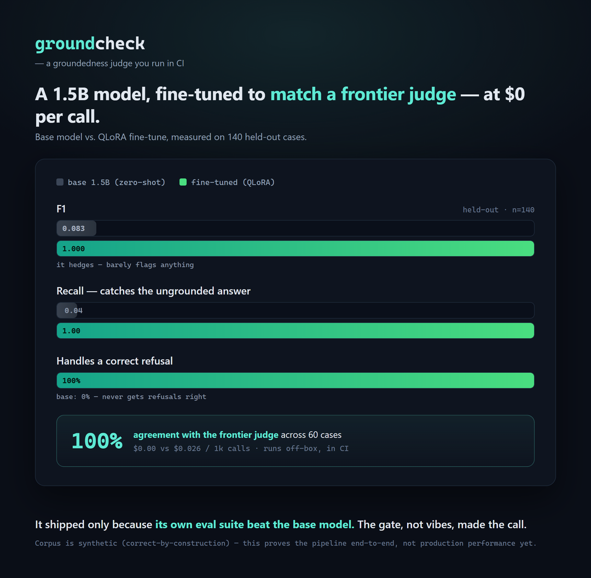
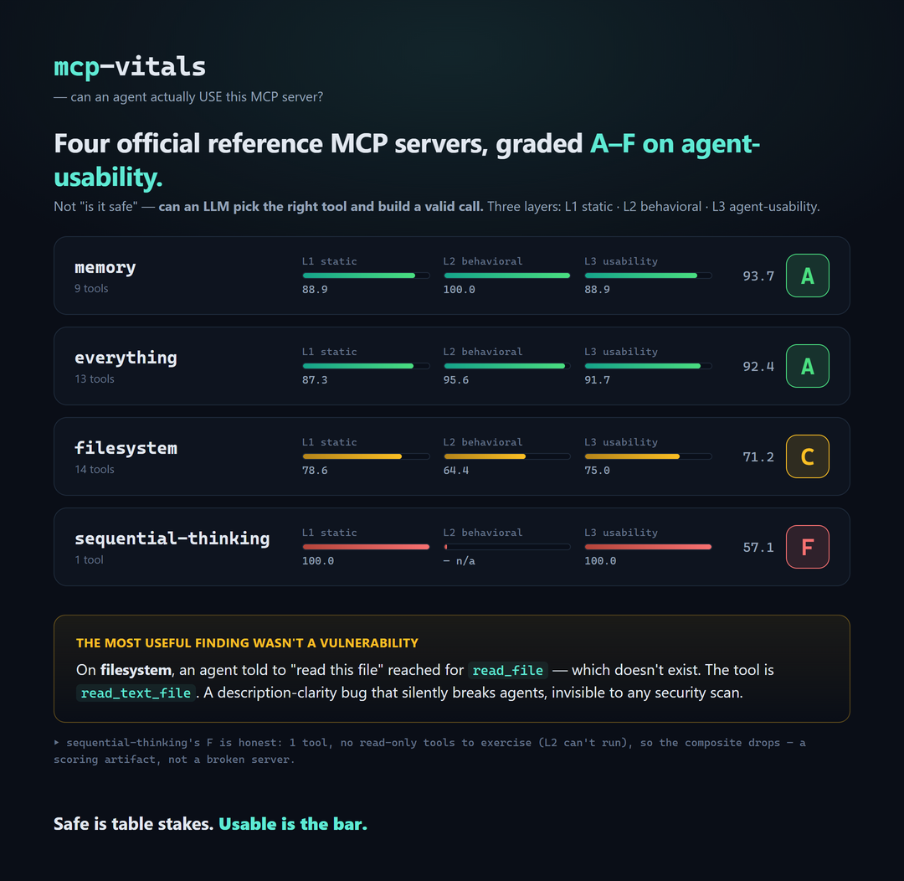

RAG that cites its exact source or refuses. Agents over the Model Context Protocol. And evals in CI, so a regression fails a build instead of a customer. Everything below is open source — read the code before you take my word.
The gap between “it worked in the notebook” and “it survives real traffic” is entirely unglamorous: deterministic gates instead of prompt-hope, structured tool outputs you can validate, retrieval that cites or refuses, tracing, and evals in CI. I build that layer — it’s the reason the interesting layer gets to ship.
Every answer carries its exact source chunk — or the system refuses. Groundedness, citations and refusal-correctness are graded, not assumed.
Multi-agent systems over the Model Context Protocol, with structured tool outputs, deterministic gates, and a grader for whether an agent can actually use a server.
A golden set, automated graders, and a CI gate that fails the build when quality drops. Quality becomes a number on a dashboard, not a feeling.
Six open-source flagships and a merged-pending contribution to a real eval framework. Each one is live, inspectable, and backed by measured results.

Point it at a config of cases + assertions and it computes a pass rate, then exits non-zero when quality drops below a threshold or regresses against a saved baseline. The deterministic checks run at zero API cost, so the gate fires on every commit.

A 1.5B open model, fine-tuned with QLoRA into a groundedness judge that runs off-box. The rule it shipped under: the fine-tune only ships if its own eval suite beats the base model. The gate, not vibes, made the call. (Corpus is synthetic — proves the pipeline end-to-end.)

Grades any MCP server A–F on whether an agent can actually use it — static, behavioral, and agent-usability layers. On the official filesystem server the most useful finding wasn’t a vulnerability; it was a tool name: an agent reached for read_file, which doesn’t exist.
A meta-eval benchmark for the answer-or-abstain decision: 270 cases (real SQuAD 2.0 traps + an adversarially-verified hard tier) that measure whether eval tools can catch over-refusal — the failure faithfulness metrics structurally can't see. Honest leaderboard: only measured numbers.
A multi-agent RAG server exposed over MCP: plan → retrieve → synthesize → self-critique. Every answer cites its exact source chunk or the agent refuses; groundedness, citation and refusal evals run in CI.
An agentic short-form video engine on LangGraph + Claude: a supervisor orchestrates tool-calling sub-agents with deterministic gates — image-first, model-accurate, one topic to a finished plan.
A community metric contributed to DeepEval that scores the answer-vs-abstain decision — the failure faithfulness metrics miss: confident answers with no support, and over-refusals. Mirrors their metrics, with docs and offline tests.
Open to remote roles — AI Engineer, LLM Reliability, Evals / Applied AI. If you want someone who’s judged on what they ship, the receipts are all above.